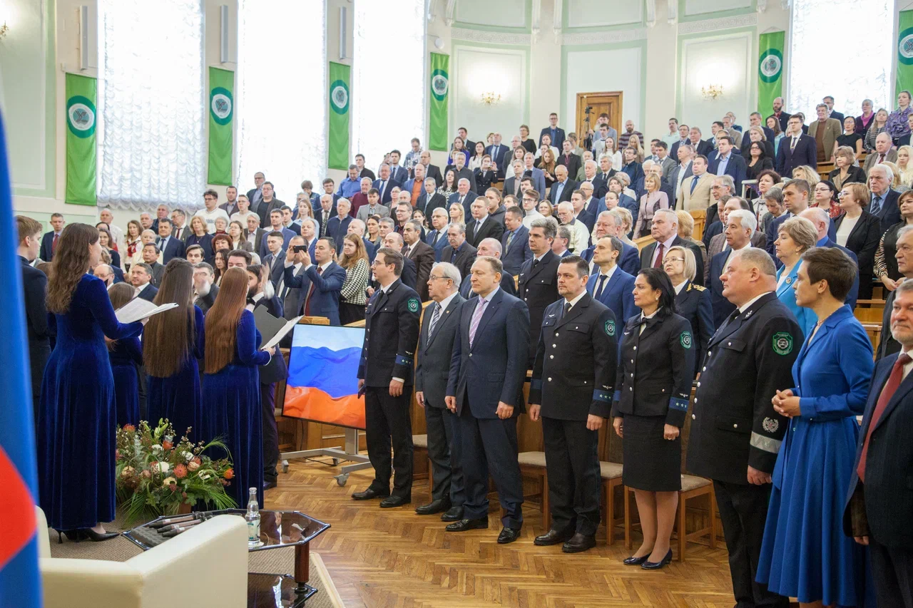
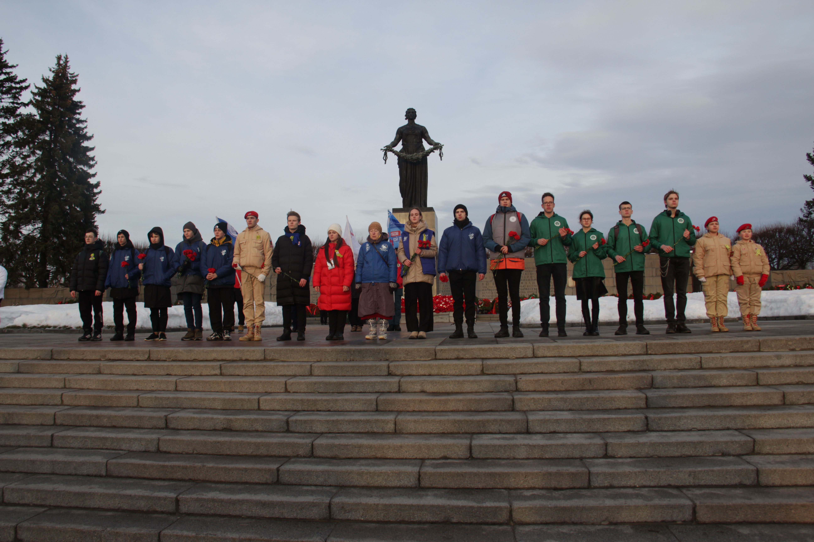
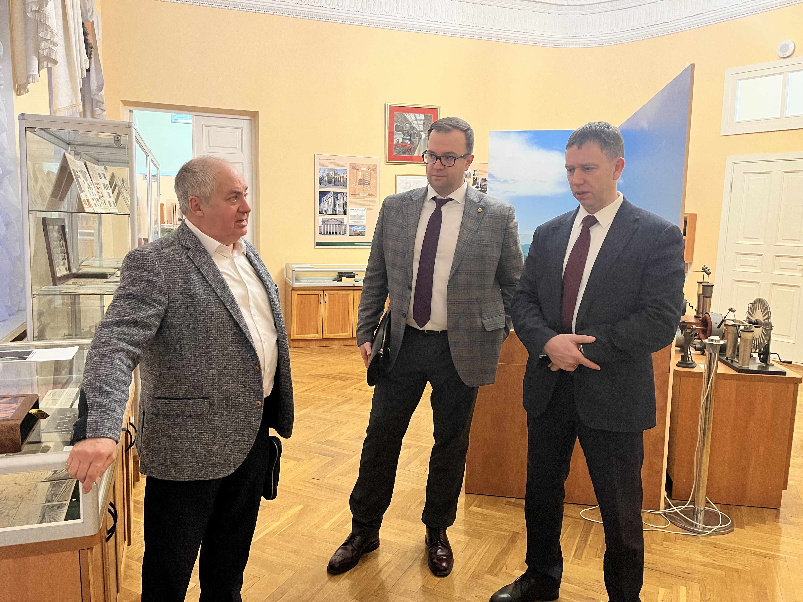
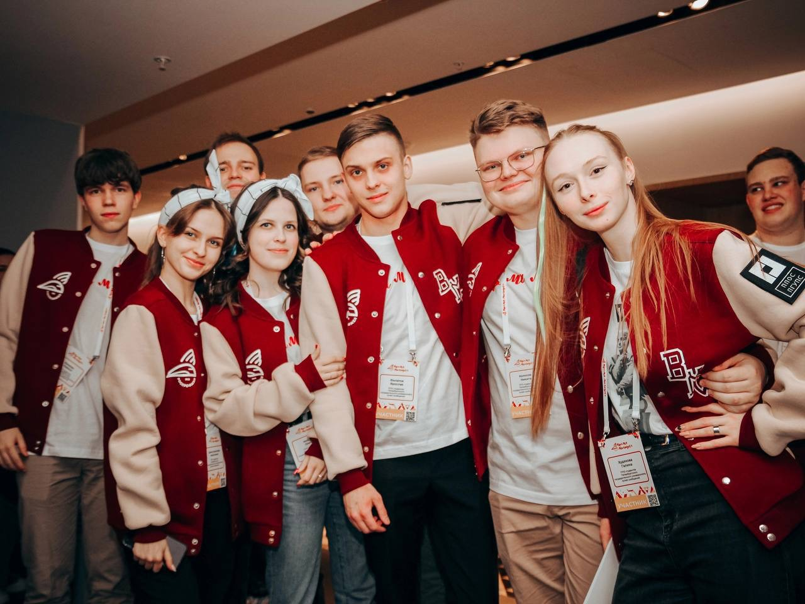
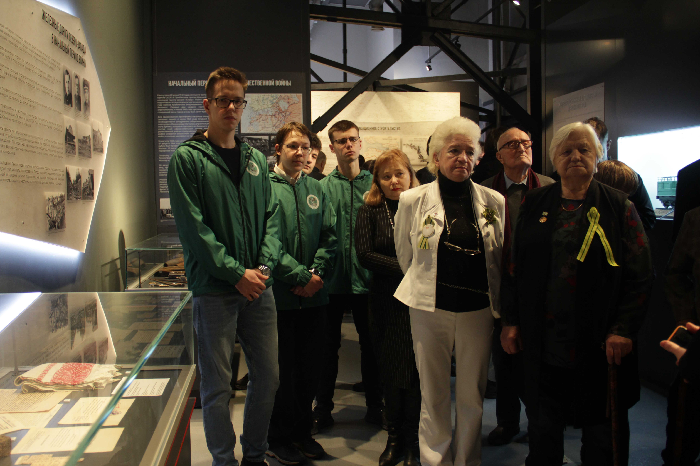
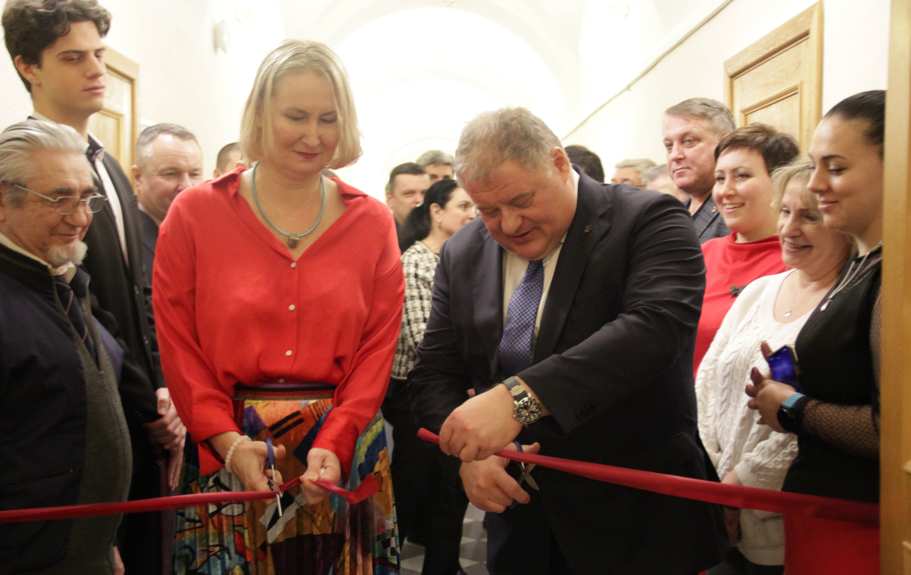

-

Объединенное заседание Наблюдательного и Координационного Советов в рамках реализации программы развития ПИШ «ИСКРА»
В ходе заседания подняты вопросы дальнейшего развития научной и образовательной деятельности передовой инженерной школы, утверждены Концепция проекта «ИСКРА», дорожная карта реализации пилотного проекта на участке «Мга-Вологда», одобрен порядок и формы заключения соглашений и договоров с компаниями-индустриальными и высокотехнологичными партнерами, утвержден план деятельности ПИШ «ИСКРА» на 2024-2025 учебный год.
24.06.2024
-

Научно-практическая конференция «Инженерное предпринимательство: инновационные решения на транспорте и в логистике»
14 мая 2024 года на площадке Школы инженерного предпринимательства прошла Научно-практическая конференция «Инженерное предпринимательство: инновационные решения на транспорте и в логистике»
21.05.2024
-

Задача Передовой инженерной школы: работать с индустриальными партнерами и в интересах индустриальных партнеров
Сегодня в нашем Университете совместно коллегами из Передовой инженерной школы ИСКРА работают представители методического центра «Передовые инженерные школы» НИЯУ МИФИ. Одной из площадок обмена мнениями стало еженедельное совещание по рассмотрению хода реализации в вузе федеральных проектов ПИШ и Приритет-2030.
07.05.2024
-

Руководство ПИШ ИСКРА в Альметьевске
С 24 по 26 апреля 2024 г. в г. Альметьевск на площадке Альметьевского государственного технологического университета «Высшая школа нефти» проходил семинар-совещание представителей передовых инженерных школ ведущих университетов России.
26.04.2024
-

Расшиваем узкие места на Восток
23 апреля 2024 года в рамках реализации программ «Приоритет 2030» и «Передовые инженерные школы» в Доме ученых имени Максима Горького состоялось пленарное заседание международной научно-практической конференции «Анализ и прогнозирование систем управления в промышленности, на транспорте и логистике».
25.04.2024
-

Делегация ПГУПСа посетила единственный в Индии железнодорожный университет
10 апреля 2024 года делегация Петербургского государственного университета путей сообщения Императора Александра I в составе заведующего кафедрой «Наземные и технологические комплексы» А.А. Воробьёва и заместителя ответственного секретаря Приемной комиссии, доцента кафедры «Логистика и коммерческая работа» Е.К. Коровяковского посетила единственный в Индии железнодорожный университет в городе Вадодара.
11.04.2024
-

Перейти на новую ступень
Продолжаем нашу совместную работу с партнёрами из Социоцентра — Центра социологических исследований Минобрнауки.
09.04.2024
-

Рефлексируем, глядя со стороны
Сегодня мы начали трёхдневную совместную работу с нашими партнёрами из Центра социологических исследований Минобрнауки — Социоцентра. Это оператор масштабных программ развития в области образования и науки РФ, в том числе — «Приоритета 2030» и «Передовых инженерных школ».
08.04.2024
-

Популяризация инженерного образования — задача государственной важности
В последних числах марта доцент кафедры «Железнодорожный путь» А.А. Киселёв принял участие в конференции, проходившей в рамках работы XIV Петербургского международного образовательного форума. Площадкой мероприятия стала опорная школа Октябрьской железной дороги (ГБОУ Школа № 54).
03.04.2024
-

Будут цели — будут и средства
Руководители ПГУПСа и профессорско-преподавательский состав подвели итоги экономического развития вуза и выбрали перспективные направления укрепления его финансово-экономического положения.
02.04.2024
-

ПГУПС и АО «Трансмашхолдинг» обменяются кластерами
Один из почётных гостей встречи, вице-губернатор Санкт-Петербурга Владимир Княгинин отметил, что видит огромный потенциал университета, причём не только в рамках федеральных проектов, но и в других аспектах его деятельности: науке, подготовке кадров и других.
20.03.2024
-

В режиме конструктивного диалога
В ПГУПСе состоялась встреча начальника Департамента управления персоналом ОАО «РЖД» Сергея Саратова и заместителя начальника Департамента управления персоналом ОАО «РЖД» Александр Збарского с руководством и профессорско-преподавательским составом вуза.
14.03.2024
-

Растить кадры для страны
На заседании коллегии Росжелдора, состоявшейся в Москве, ректор ПГУПСа Олег Сергеевич Валинский представил обобщённое видение дальнейшего развития университетских комплексов железнодорожного транспорта на ближайшие годы в контексте Послания Президента РФ Федеральному собранию.
14.03.2024
-

Круглый стол «Знакомство со специальностью „Автоматика и телемеханика на железных дорогах“»
Мероприятие проведено с целью расширения профессионального кругозора, выявления способностей учащихся выпускных классов общеобразовательных и профессиональных образовательных организаций применительно к специализации «Автоматика и телемеханика».
05.03.2024
-

Утверждение дизайн-проекта помещений ПИШ «ИСКРА»
4 марта 2024 года в ходе рабочего совещания по развитию ПИШ «ИСКРА» был представлен дизайн-проект помещений, выделенных под Передовую инженерную школу.
04.03.2024
-

Наука всему голова!
В минувший вторник Учёный совет ПГУПСа впервые в этом году прошел в новом составе. С этим торжественным событием представителей трудовых коллективов, пополнивших Учёный совет вуза, поздравил ректор Олег Сергеевич Валинский.
22.02.2024
-

Масштабные планы инженерных школ ПГУПСа
07.02.2024
-

30 января 2024 года делегация ФГБОУ ВО ПГУПС посетила Новгородский государственный университет имени Ярослава Мудрого (НовГУ) в целях обмена опытом по реализации программы развития передовых инженерных школ.
30 января 2024 года делегация ФГБОУ ВО ПГУПС посетила Новгородский государственный университет имени Ярослава Мудрого (НовГУ) в целях обмена опытом по реализации программы развития передовых инженерных школ. Новгородская ПИШ находится на территории инновационного научно-технологического центра «Валдай».
07.02.2024
-

Делегация ПГУПС ознакомилась с уникальным опытом и достижениями ПИШ СПбПУ «Цифровой инжиниринг»
16 января 2024 года представители Петербургского государственного университета путей сообщения Императора Александра I (ПГУПС) посетили Передовую инженерную школу «Цифровой инжиниринг» Санкт-Петербургского политехнического университета Петра Великого (ПИШ СПбПУ) с рабочим визитом. Встреча была направлена на ознакомление и изучение успешного опыта реализации программы ПИШ СПбПУ и обсуждение сотрудничества в научно-технических и образовательных проектах.
19.01.2024
-

ПГУПС вошел в число победителей федерального проекта «Передовые инженерные школы»
По итогам второй волны отбора Петербургский государственный университет путей сообщения Императора Александра I вошёл в число 20 сильнейших вузов и стал участником федерального проекта «Передовые инженерные школы».
12.12.2023
-

Сегодня в Москве прошла защита проекта Передовой инженерной школы ИСКРА
В Минобрнауки состоялась защита проекта Передовой инженерной школы «ИСКРА» Петербургского государственного университета путей сообщения Императора Александра I.
05.12.2023

Все новости